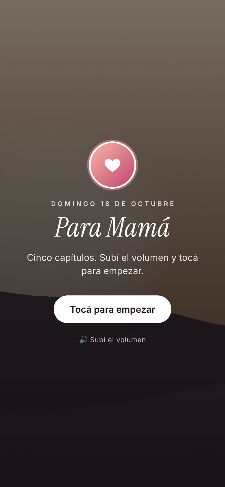
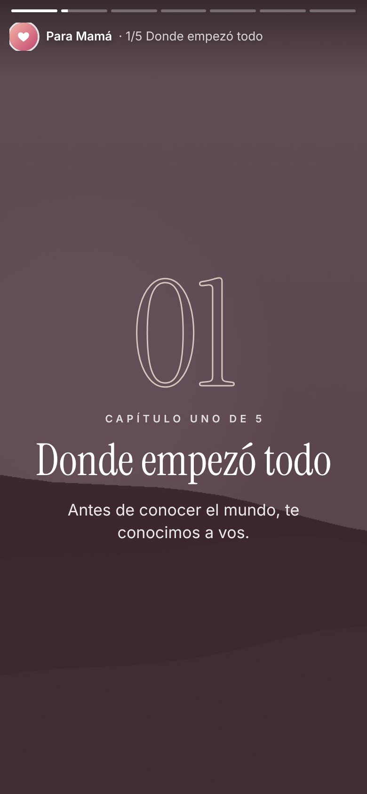
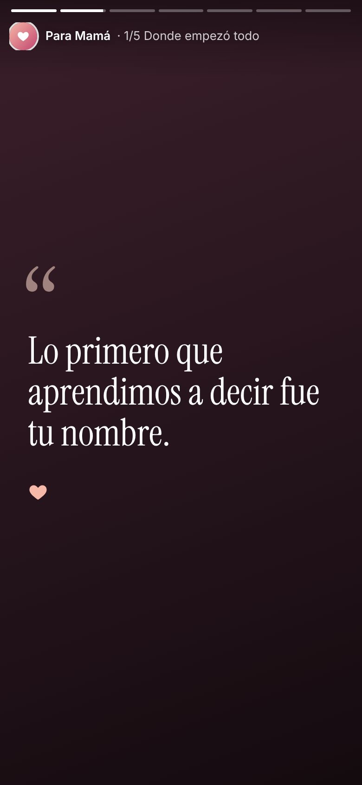
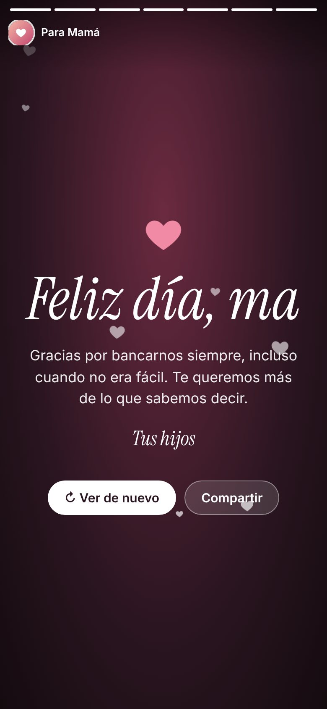
Historias
Como las historias de Instagram: pantalla completa, avanza sola al ritmo de la música. Tocás para pasar, mantenés para pausar.
Día de la Madre · código abierto
Elegí un formato, poné tus fotos y escribí cinco frases. Te queda una página animada para mandarle por WhatsApp. Gratis, sin registro y sin servidor.




Como las historias de Instagram: pantalla completa, avanza sola al ritmo de la música. Tocás para pasar, mantenés para pausar.
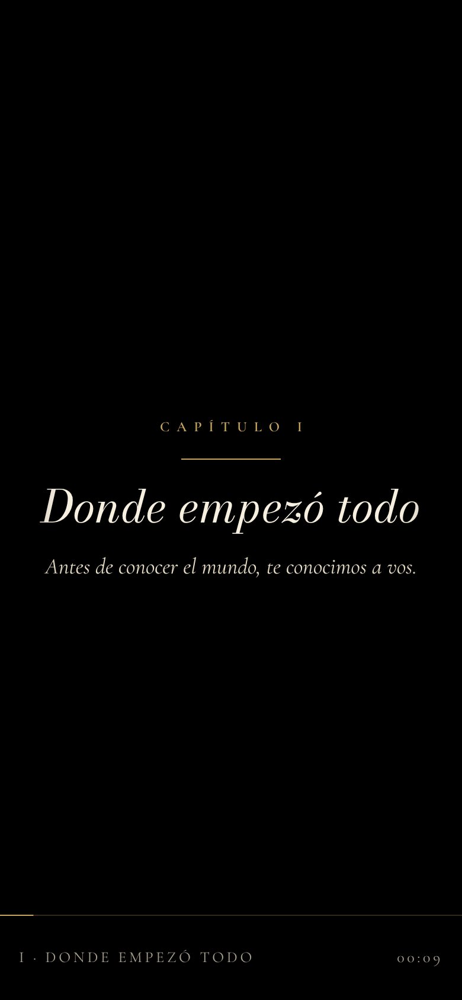
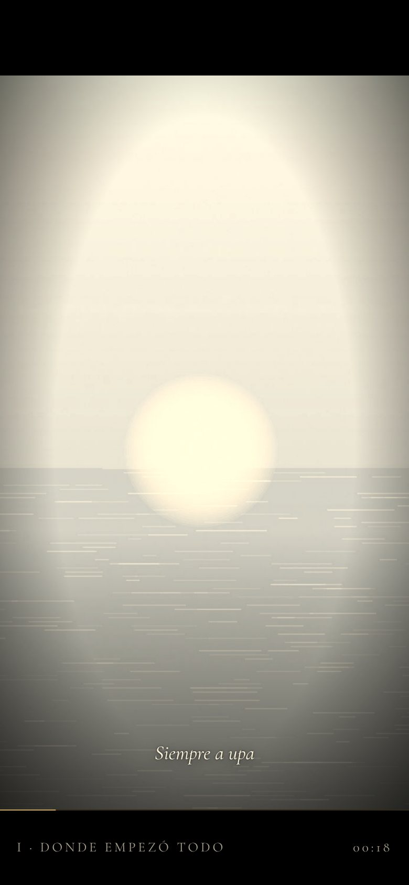
Una película: cuenta regresiva, bandas negras y grano. Las fotos empiezan en sepia y se llenan de color. Termina con créditos.
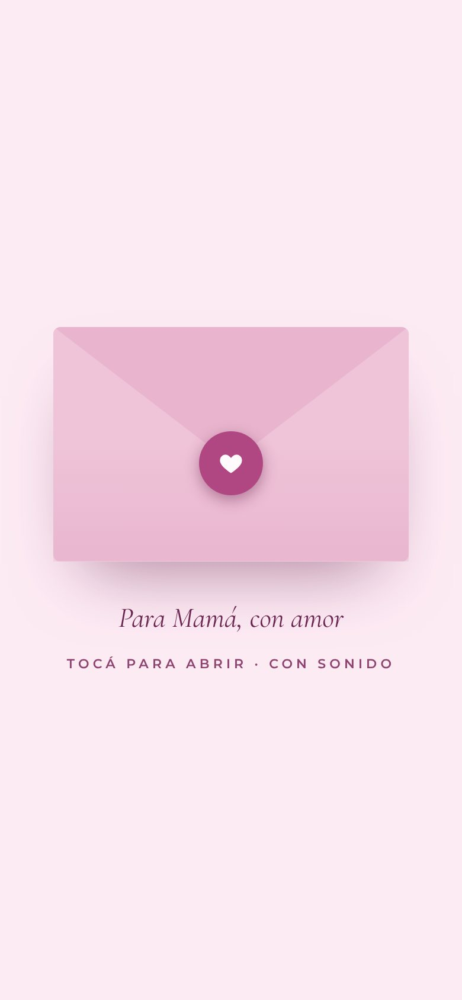
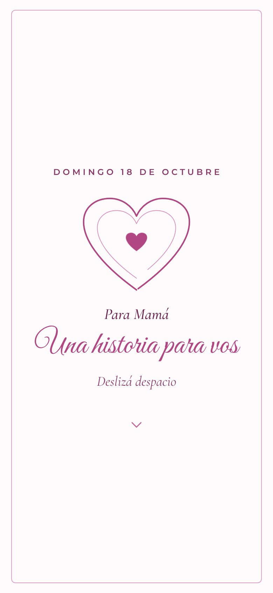
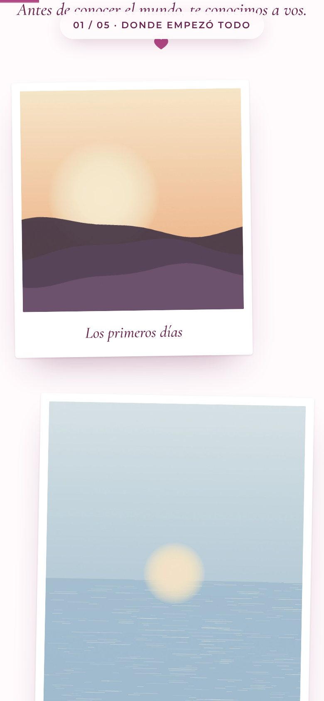
Se abre un sobre y la historia se lee bajando con el dedo: polaroids que aparecen y frases grandes entre capítulos.
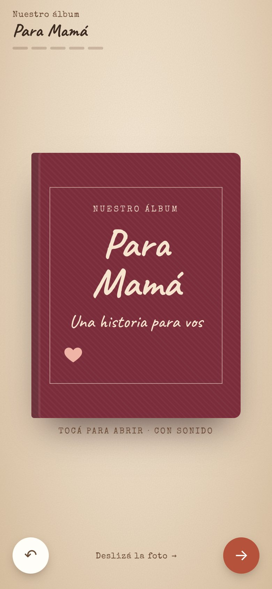
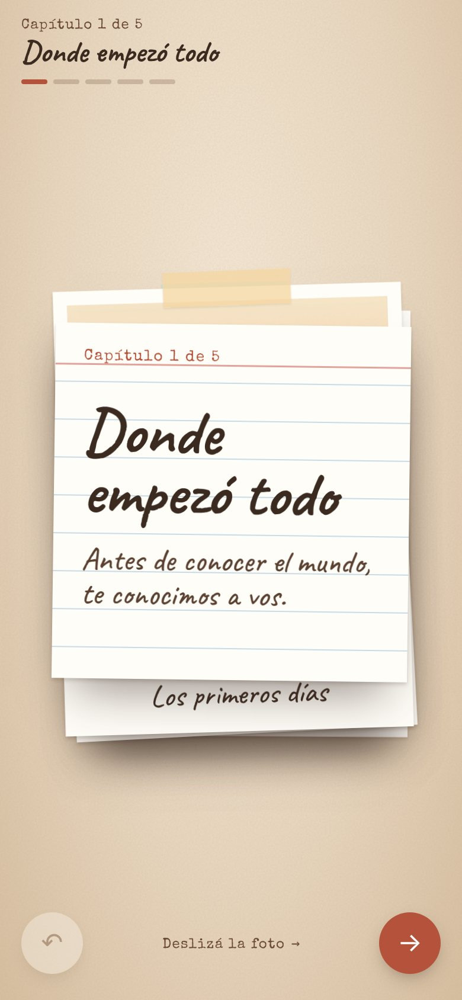
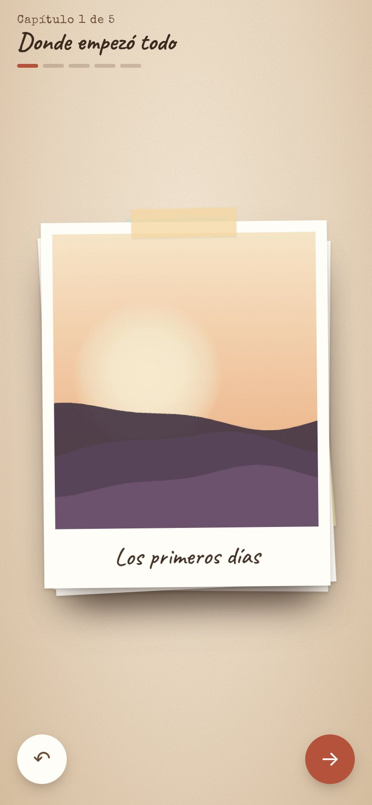
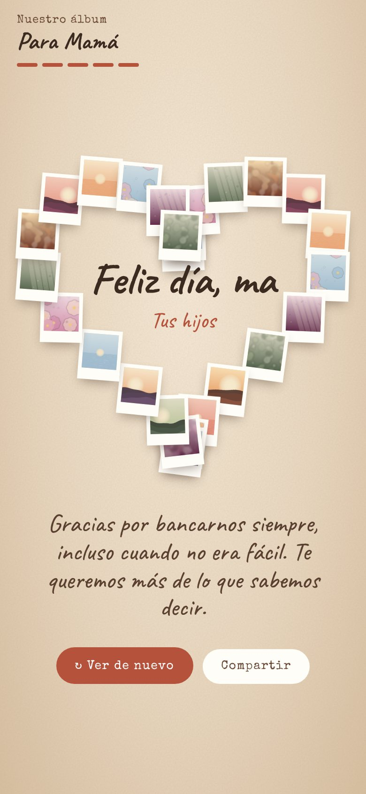
Fotos sobre la mesa que se deslizan con el dedo. Al final, todas las fotos se juntan y forman un corazón.
La historia
Cada capítulo tiene un título, una frase, sus fotos y un "golpe": una frase corta que aparece sola en pantalla antes de pasar al siguiente.
Bebés y las fotos más viejas. Ternura.
Primer día de clases, cumpleaños. Reconocimiento.
Viajes y risas. Alegría, respira.
Lo que hizo sin que nadie mirara. El golpe.
Todos juntos. Cierre cálido.
También en compu
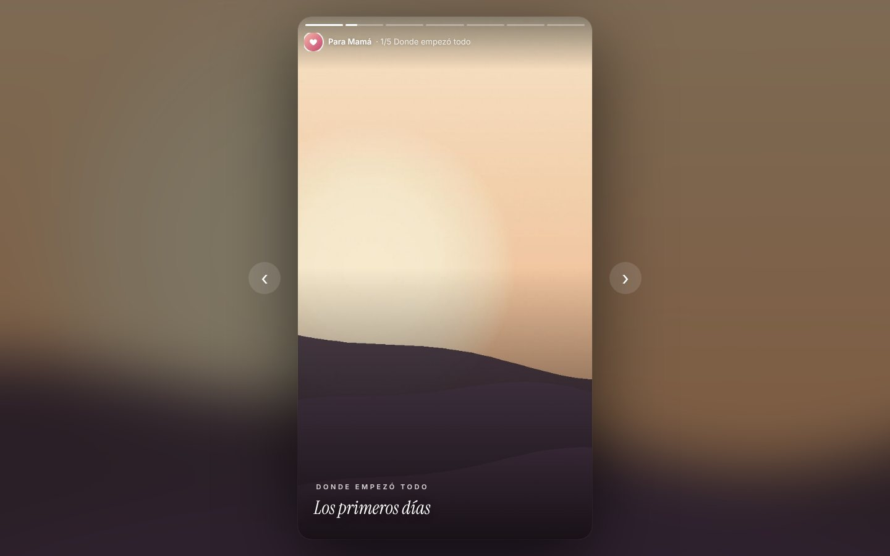
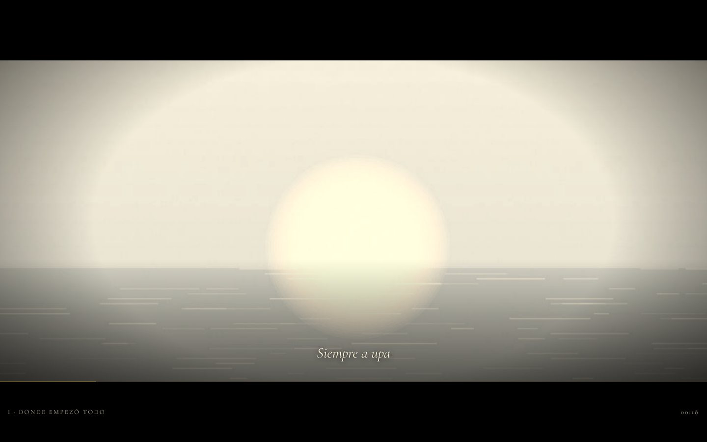
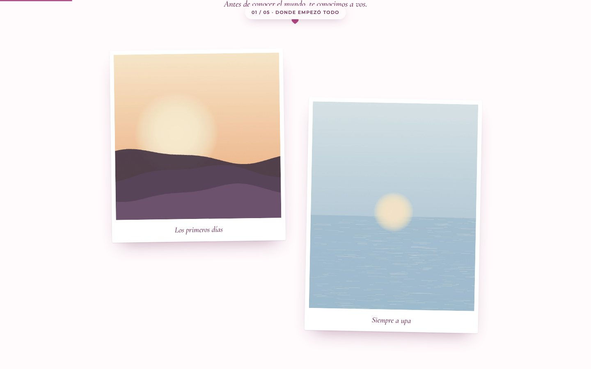
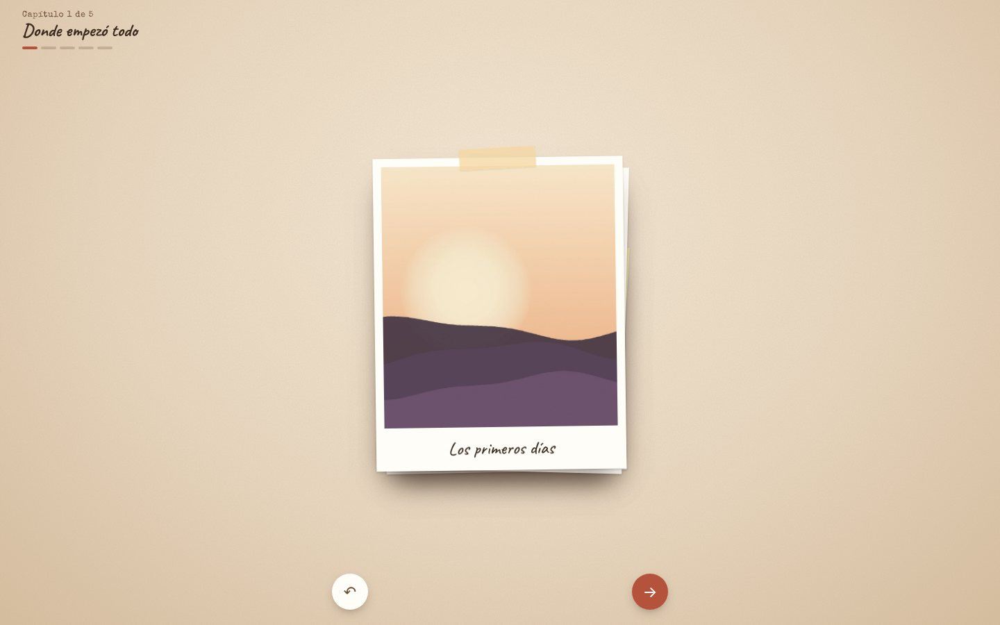
Hacé la tuya
En GitHub, tocá Fork. O, si preferís Claude, descargá index.html y historia.js y seguí la guía PROMPT-CLAUDE.
Subí las fotos a fotos/, la canción como musica.mp3 y cambiá los textos en historia.js. Ahí también elegís el formato.
Settings → Pages → main. En un minuto tenés tu link para mandar por WhatsApp. También funciona como artifact de Claude.